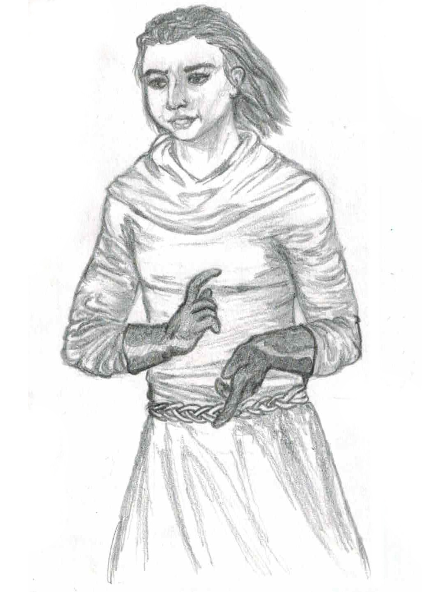

Combat is a dangerous and costly activity, but inevitable for those who choose to dungeon delve.
Stunts are grappling, tripping, or any other kind of creative option. Stunts may not cause damage directly, but can do about anything else.
How stunts are resolved is up to the dungeon master. These are provided as examples.

B.S.
Melee attacks have a range of touch. Ranged attacks have a range of distant (i.e. in adjacent zones or closer).
The Armor Class (AC) is how likely a target is to be hit. The base armor class of an unarmored character is 9.
The Attack Value (AV), also called THAC0, is how likely an attack is to miss.
Lower AC and AV are better.
The Dungeon Master might either announce the result of the attack, or tell you the AC/AV so you can announce it yourself.
Damage represents injury, exhaustion, and wear. Yabec uses a damage up system, meaning instead of losing HP, you gain damage.
When a creature has damage equal to its HP, it is slain.
Slain hirelings and ordinary monsters instantly die.
Slain PCs and powerful monsters are near death. See below.
If a creature is slain with a blunt weapon, they can be left non-lethally incapacitated, until a shift hazard.
If slain by fire or explosion, all items are destroyed, and death is instant. Magic items have a chance of miraculously surviving.
Attacks against prone creatures have advantage. A creature is prone until it uses a Standby action to stand up.
When two or more combatants begin grappling, they can not move, nor stand up from prone.
Attacks against an incapacitated creature hit automatically. An incapacitated creature is unable to move or take other actions.
A creature restained by rope, manacles, or a hold spell is incapacitated. If restrained by mundane forces, a creature can attempt to break out of it.
A turned creature is overcome with fear, cowering when unable to flee.
A creature who is unable to perceive their surroundings.
At the end of the 9th round, and each round after, all creatures still involved in the combat take 1 damage.
Characters that are near death:
Every dismember carries a chance of death. Roll a d12, add the amount of damage you have in excess of your health, and add the amount of scars you have. Then reference the table.
Scars take up an item slot, and can't be put down. Most scars can't be healed, but may carry an aditional affect.
Reference the table.| Result | Dismember |
|---|---|
| >= 12 | Dead! |
| 11 | Scar: Mostly dead. Until fully healed, you can only be healed magically, mumble, and crawl slowly. When you are fully healed, remove this scar and gain 1 renown. |
| 10 | Scar: Mangled arm. Can't use two-handed weapons nor shields. 1-in-10 chance: your weapon is permanently fused into your arm insted. |
| 9 | Scar: On the face! -1d4 CHA, -1d4 HP, and gain advantage on intimidation. 1-in-10 chance: loose an eye: embed a gemstone worth 100 cp or more to double the length of spells like detect magic, locate object, and see invisible. |
| 8 | Scar: Diseased. You’re afflicted with a gross, uncomfortable infection. Each week, you can attempt a constitution check, to remove this scar and gain 1 hp. |
| 6 | Scar: Re-Brained. One random ability score is reduced by 1d4. One random ability score is increased by 1. |
| 5 | Scar: Gruesome. No other effects. |
| 4 | Scar: Near death experience. Gain 333 XP. Something from the otherside starts stalking you. |
| <=3 | Miraculously unharmed! |
Monsters and hirelings might have the morale broken. They check their morale when:
The dungeon master rolls 2d6. The check fails if the result is greater than their morale / loyalty score. They surrender or flee.
The first attempt to move out of difficult terrain fails. i.e. it takes two moves to pass through.
In melee, if one side surrounds the other, the surrounded side has a +4 penalty to AC.
When a ranged attack misses, players make a dexterity check to void hitting an ally. Monsters and hirelings have a 3-in-6 chance.
During combat, it's possible to reference a map, but adding to a map is impossible.
This alternate combat system doesn't use attack rolls or armor class. The feel of the combat will be different, and may be more appropriate for single combat. It can also be applied asymetrically. i.e. players make dodge rolls but not attack rolls.
Armor prevents some damage. Consult the table below to determine how much damage can be prevented each combat.
| AC | Damage |
|---|---|
| ≥10 | 2 |
| 9 | 4 |
| 7-8 | 6 |
| 5-6 | 8 |
| 3-5 | 12 |
| ≤2 | 16 |
Combatants with an AV of 15 or less deal +1 damage, with 11 or less deal +2, and with 20 or greater deal -1.
When making a weapon attack, the attacker chooses a target. Attacks against the torso always hit. Attacks against another target require one or more ability checks to hit, but have additional effects.
Each round, combatants have one object interaction, which they can use to pick or draw a weapon, drink a potion, stand up from the ground, or similar.